第 1 / 12 页
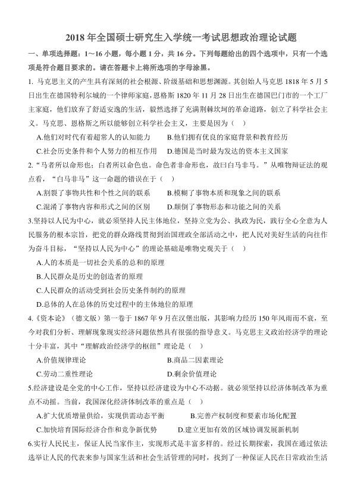
2018 年全国硕士研究生入学统一考试思想政治理论试题
一、单项选择题：1～16 小题，每小题1 分，共16 分。下列每题给出的四个选项中，只有一个选
项是符合题目要求的。请在答题卡上将所选项的字母涂黑。
1. 马克思主义的产生具有深刻的社会根源、阶级基础和思想渊源。其创始人马克思1818 年5 月5
日出生在德国特利尔城的一个律师家庭，恩格斯1820 年11 月28 日出生在德国巴门市的一个工厂
主家庭，他们放弃了舒适安逸的生活，毅然选择了充满荆棘坎坷的革命道路，创立了科学社会主
义。马克思、恩格斯之所以能够创立科学社会主义，主要是因为（ ）
A.他们对时代有着超常人的认知能力
B.他们拥有优良的家庭背景和教育经历
C.社会历史条件和个人努力的相互作用
D.德国是当时最为发达的资本主义国家
2.“马者所以命形也；白者所以命色也。命色者非命形也，故曰白马非马。”从唯物辩证法的观
点看，“白马非马”这一命题的错误在于（ ）
A.割裂了事物共性和个性之间的联系
B.模糊了事物本质和现象之间的联系
C.混淆了事物内容和形式之间的区别
D.颠倒了事物形态和功能之间的关系
3.坚持以人民为中心，就必须坚持人民主体地位，坚持立党为公、执政为民，践行全心全意为人
民服务的根本宗旨，把党的群众路线贯彻到治国理政全部活动之中，把人民对美好生活的向往作
为奋斗目标，“坚持以人民为中心”的理论基础是唯物史观关于（ ）
A.人的本质是一切社会关系的总和的原理
B.人民群众是历史的创造者的原理
C.人民群众的活动受到社会历史条件制约的原理
D.总体的人在总体的历史过程中的主体地位的原理
4.《资本论》（德文版）第一卷于1867 年9 月在汉堡出版，其影响力经历150 年风雨而不衰，至
今对我们分析、理解现象现实经济问题依然具有很强的指导意义。马克思主义政治经济学的理论
十分丰富，其中“理解政治经济学的枢纽”理论是（ ）
A.价值规律理论
B.商品二因素理论
C.劳动二重性理论
D.剩余价值理论
5.经济建设是全党的中心工作，坚持以经济建设为中心不动据。就必须坚持以经济体制改革为重
点不动摇。当前，我国深化经济体制改革的重点是（ ）
A.扩大优质增量供给，实现供需动态平衡
B.完善产权制度和要素市场化配置
C.加快培育国际经济合作和竞争新优势 D.建立更加有效的区域协调发展新机制
6.实行人民民主，保证人民当家作主，实现形式是丰富多样的。经过长期探索，我国在通过依法
选举让人民的代表来参与国家生活和社会生活管理的同时，找到了一种保证人民在日常政治生活
查看 / 复制本页文字
2018 年全国硕士研究生入学统一考试思想政治理论试题 一、单项选择题：1～16 小题，每小题1 分，共16 分。下列每题给出的四个选项中，只有一个选 项是符合题目要求的。请在答题卡上将所选项的字母涂黑。 1. 马克思主义的产生具有深刻的社会根源、阶级基础和思想渊源。其创始人马克思1818 年5 月5 日出生在德国特利尔城的一个律师家庭，恩格斯1820 年11 月28 日出生在德国巴门市的一个工厂 主家庭，他们放弃了舒适安逸的生活，毅然选择了充满荆棘坎坷的革命道路，创立了科学社会主 义。马克思、恩格斯之所以能够创立科学社会主义，主要是因为（ ） A.他们对时代有着超常人的认知能力 B.他们拥有优良的家庭背景和教育经历 C.社会历史条件和个人努力的相互作用 D.德国是当时最为发达的资本主义国家 2.“马者所以命形也；白者所以命色也。命色者非命形也，故曰白马非马。”从唯物辩证法的观 点看，“白马非马”这一命题的错误在于（ ） A.割裂了事物共性和个性之间的联系 B.模糊了事物本质和现象之间的联系 C.混淆了事物内容和形式之间的区别 D.颠倒了事物形态和功能之间的关系 3.坚持以人民为中心，就必须坚持人民主体地位，坚持立党为公、执政为民，践行全心全意为人 民服务的根本宗旨，把党的群众路线贯彻到治国理政全部活动之中，把人民对美好生活的向往作 为奋斗目标，“坚持以人民为中心”的理论基础是唯物史观关于（ ） A.人的本质是一切社会关系的总和的原理 B.人民群众是历史的创造者的原理 C.人民群众的活动受到社会历史条件制约的原理 D.总体的人在总体的历史过程中的主体地位的原理 4.《资本论》（德文版）第一卷于1867 年9 月在汉堡出版，其影响力经历150 年风雨而不衰，至 今对我们分析、理解现象现实经济问题依然具有很强的指导意义。马克思主义政治经济学的理论 十分丰富，其中“理解政治经济学的枢纽”理论是（ ） A.价值规律理论 B.商品二因素理论 C.劳动二重性理论 D.剩余价值理论 5.经济建设是全党的中心工作，坚持以经济建设为中心不动据。就必须坚持以经济体制改革为重 点不动摇。当前，我国深化经济体制改革的重点是（ ） A.扩大优质增量供给，实现供需动态平衡 B.完善产权制度和要素市场化配置 C.加快培育国际经济合作和竞争新优势 D.建立更加有效的区域协调发展新机制 6.实行人民民主，保证人民当家作主，实现形式是丰富多样的。经过长期探索，我国在通过依法 选举让人民的代表来参与国家生活和社会生活管理的同时，找到了一种保证人民在日常政治生活
第 2 / 12 页
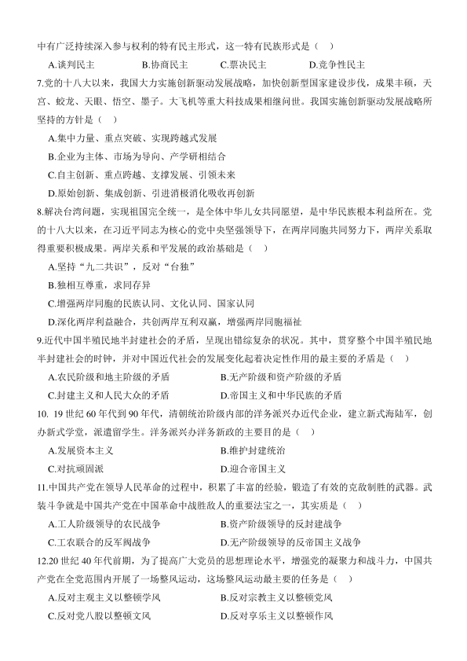
中有广泛持续深入参与权利的特有民主形式，这一特有民族形式是（ ）
A.谈判民主 B.协商民主
C.票决民主 D.竞争性民主
7.党的十八大以来，我国大力实施创新驱动发展战略，加快创新型国家建设步伐，成果丰硕，天
宫、蛟龙、天眼、悟空、墨子。大飞机等重大科技成果相继问世。我国实施创新驱动发展战略所
坚持的方针是（ ）
A.集中力量、重点突破、实现跨越式发展
B.企业为主体、市场为导向、产学研相结合
C.自主创新、重点跨越、支撑发展、引领未来
D.原始创新、集成创新、引进消极消化吸收再创新
8.解决台湾问题，实现祖国完全统一，是全体中华儿女共同愿望，是中华民族根本利益所在。党
的十八大以来，在习近平同志为核心的党中央坚强领导下，在两岸同胞共同努力下，两岸关系取
得重要积极成果。两岸关系和平发展的政治基础是（ ）
A.坚持“九二共识”，反对“台独”
B.独相互尊重，求同存异
C.增强两岸同胞的民族认同、文化认同、国家认同
D.深化两岸利益融合，共创两岸互利双赢，增强两岸同胞福祉
9.近代中国半殖民地半封建社会的矛盾，呈现出错综复杂的状况。其中，贯穿整个中国半殖民地
半封建社会的时钟，并对中国近代社会的发展变化起着决定性作用的最主要的矛盾是（ ）
A.农民阶级和地主阶级的矛盾
B.无产阶级和资产阶级的矛盾
C.封建主义和人民大众的矛盾
D.帝国主义和中华民族的矛盾
10. 19 世纪60 年代到90 年代，清朝统治阶级内部的洋务派兴办近代企业，建立新式海陆军，创
办新式学堂，派遣留学生。洋务派兴办洋务新政的主要目的是（ ）
A.发展资本主义
B.维护封建统治
C.对抗顽固派
D.迎合帝国主义
11.中国共产党在领导人民革命的过程中，积累了丰富的经验，锻造了有效的克敌制胜的武器。武
装斗争就是中国共产党在中国革命中战胜敌人的重要法宝之一，其实质是（ ）
A.工人阶级领导的农民战争
B.资产阶级领导的反封建战争
C.工农联合的反军阀战争
D.无产阶级领导的反帝国主义战争
12.20 世纪40 年代前期，为了提高广大党员的思想理论水平，增强党的凝聚力和战斗力，中国共
产党在全党范围内开展了一场整风运动，这场整风运动最主要的任务是（ ）
A.反对主观主义以整顿学风
B.反对宗教主义以整顿党风
C.反对党八股以整顿文风
D.反对享乐主义以整顿作风
查看 / 复制本页文字
中有广泛持续深入参与权利的特有民主形式，这一特有民族形式是（ ） A.谈判民主 B.协商民主 C.票决民主 D.竞争性民主 7.党的十八大以来，我国大力实施创新驱动发展战略，加快创新型国家建设步伐，成果丰硕，天 宫、蛟龙、天眼、悟空、墨子。大飞机等重大科技成果相继问世。我国实施创新驱动发展战略所 坚持的方针是（ ） A.集中力量、重点突破、实现跨越式发展 B.企业为主体、市场为导向、产学研相结合 C.自主创新、重点跨越、支撑发展、引领未来 D.原始创新、集成创新、引进消极消化吸收再创新 8.解决台湾问题，实现祖国完全统一，是全体中华儿女共同愿望，是中华民族根本利益所在。党 的十八大以来，在习近平同志为核心的党中央坚强领导下，在两岸同胞共同努力下，两岸关系取 得重要积极成果。两岸关系和平发展的政治基础是（ ） A.坚持“九二共识”，反对“台独” B.独相互尊重，求同存异 C.增强两岸同胞的民族认同、文化认同、国家认同 D.深化两岸利益融合，共创两岸互利双赢，增强两岸同胞福祉 9.近代中国半殖民地半封建社会的矛盾，呈现出错综复杂的状况。其中，贯穿整个中国半殖民地 半封建社会的时钟，并对中国近代社会的发展变化起着决定性作用的最主要的矛盾是（ ） A.农民阶级和地主阶级的矛盾 B.无产阶级和资产阶级的矛盾 C.封建主义和人民大众的矛盾 D.帝国主义和中华民族的矛盾 10. 19 世纪60 年代到90 年代，清朝统治阶级内部的洋务派兴办近代企业，建立新式海陆军，创 办新式学堂，派遣留学生。洋务派兴办洋务新政的主要目的是（ ） A.发展资本主义 B.维护封建统治 C.对抗顽固派 D.迎合帝国主义 11.中国共产党在领导人民革命的过程中，积累了丰富的经验，锻造了有效的克敌制胜的武器。武 装斗争就是中国共产党在中国革命中战胜敌人的重要法宝之一，其实质是（ ） A.工人阶级领导的农民战争 B.资产阶级领导的反封建战争 C.工农联合的反军阀战争 D.无产阶级领导的反帝国主义战争 12.20 世纪40 年代前期，为了提高广大党员的思想理论水平，增强党的凝聚力和战斗力，中国共 产党在全党范围内开展了一场整风运动，这场整风运动最主要的任务是（ ） A.反对主观主义以整顿学风 B.反对宗教主义以整顿党风 C.反对党八股以整顿文风 D.反对享乐主义以整顿作风
第 3 / 12 页
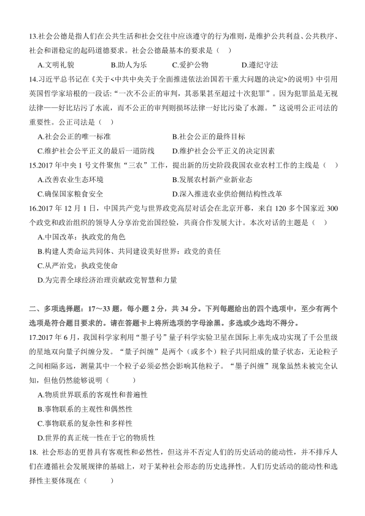
13.社会公德是指人们在公共生活和社会交往中应该遵守的行为准则，是维护公共利益、公共秩序、
社会和谐稳定的起码道德要求。社会公德最基本的要求是（ ）
A.文明礼貌 B.助人为乐
C.爱护公物 D.遵纪守法
14.习近平总书记在《关于<中共中央关于全面推进依法治国若干重大问题的决定>的说明》中引用
英国哲学家培根的一段话:“一次不公正的审判，其恶果甚至超过十次犯罪”。因为犯罪虽是无视
法律——好比玷污了水流，而不公正的审判则损坏法律一好比污染了水源。”这说明公正司法的
重要性。公正司法是（ ）
A.社会公正的唯一标准
B.社会公正的最终目标
C.维护社会公平正义的最后一道防线
D.维护社会公平正义的决定因素
15.2017 年中央1 号文件聚焦“三农”工作，提出新的历史阶段我国农业农村工作的主线是（ ）
A.改善农业生态环境
B.发展农村新产业新业态
C.确保国家粮食安全
D.深入推进农业供给侧结构性改革
16.2017 年12 月1 日，中国共产党与世界政党高层对话会在北京开幕，来自120 多个国家近300
个政党和政治组织的领导人分享治党治国经验，共商合作发展大计。本次对话的主题是（ ）
A.中国改革：执政党的角色
B.构建人类命运共同体、共同建设美好世界：政党的责任
C.从严治党：执政党使命
D.为完善全球经济治理贡献政党智慧和力量
二、多项选择题：17～33 题，每小题2 分，共34 分。下列每题给出的四个选项中，至少有两个
选项是符合题目要求的。请在答题卡上将所选项的字母涂黑。多选或少选均不得分。
17.2017 年6 月，我国科学家利用“墨子号”量子科学实验卫星在国际上率先成功实现了千公里级
的星地双向量子纠缠分发。“量子纠缠”是两个（或多个）粒子共同组成的量子状态，无论粒子
之间相隔多远，测量其中一个粒子必须必然会影响其他粒子。“墨子纠缠”现象虽然未被完全认
知，但他仍然能够说明（ ）
A.物质世界联系的客观性和普遍性
B.事物联系的主观性和偶然性
C.事物联系的复杂性和多样性
D.世界的真正统一性在于它的物质性
18. 社会形态的更替具有客观性和必然性，但这并不否定人们的历史活动的能动性，并不排斥人
们在遵循社会发展规律的基础上，对于某种社会形态的历史选择性。人们历史活动的能动性和选
择性主要体现在（ ）
查看 / 复制本页文字
13.社会公德是指人们在公共生活和社会交往中应该遵守的行为准则，是维护公共利益、公共秩序、 社会和谐稳定的起码道德要求。社会公德最基本的要求是（ ） A.文明礼貌 B.助人为乐 C.爱护公物 D.遵纪守法 14.习近平总书记在《关于<中共中央关于全面推进依法治国若干重大问题的决定>的说明》中引用 英国哲学家培根的一段话:“一次不公正的审判，其恶果甚至超过十次犯罪”。因为犯罪虽是无视 法律——好比玷污了水流，而不公正的审判则损坏法律一好比污染了水源。”这说明公正司法的 重要性。公正司法是（ ） A.社会公正的唯一标准 B.社会公正的最终目标 C.维护社会公平正义的最后一道防线 D.维护社会公平正义的决定因素 15.2017 年中央1 号文件聚焦“三农”工作，提出新的历史阶段我国农业农村工作的主线是（ ） A.改善农业生态环境 B.发展农村新产业新业态 C.确保国家粮食安全 D.深入推进农业供给侧结构性改革 16.2017 年12 月1 日，中国共产党与世界政党高层对话会在北京开幕，来自120 多个国家近300 个政党和政治组织的领导人分享治党治国经验，共商合作发展大计。本次对话的主题是（ ） A.中国改革：执政党的角色 B.构建人类命运共同体、共同建设美好世界：政党的责任 C.从严治党：执政党使命 D.为完善全球经济治理贡献政党智慧和力量 二、多项选择题：17～33 题，每小题2 分，共34 分。下列每题给出的四个选项中，至少有两个 选项是符合题目要求的。请在答题卡上将所选项的字母涂黑。多选或少选均不得分。 17.2017 年6 月，我国科学家利用“墨子号”量子科学实验卫星在国际上率先成功实现了千公里级 的星地双向量子纠缠分发。“量子纠缠”是两个（或多个）粒子共同组成的量子状态，无论粒子 之间相隔多远，测量其中一个粒子必须必然会影响其他粒子。“墨子纠缠”现象虽然未被完全认 知，但他仍然能够说明（ ） A.物质世界联系的客观性和普遍性 B.事物联系的主观性和偶然性 C.事物联系的复杂性和多样性 D.世界的真正统一性在于它的物质性 18. 社会形态的更替具有客观性和必然性，但这并不否定人们的历史活动的能动性，并不排斥人 们在遵循社会发展规律的基础上，对于某种社会形态的历史选择性。人们历史活动的能动性和选 择性主要体现在（ ）
第 4 / 12 页
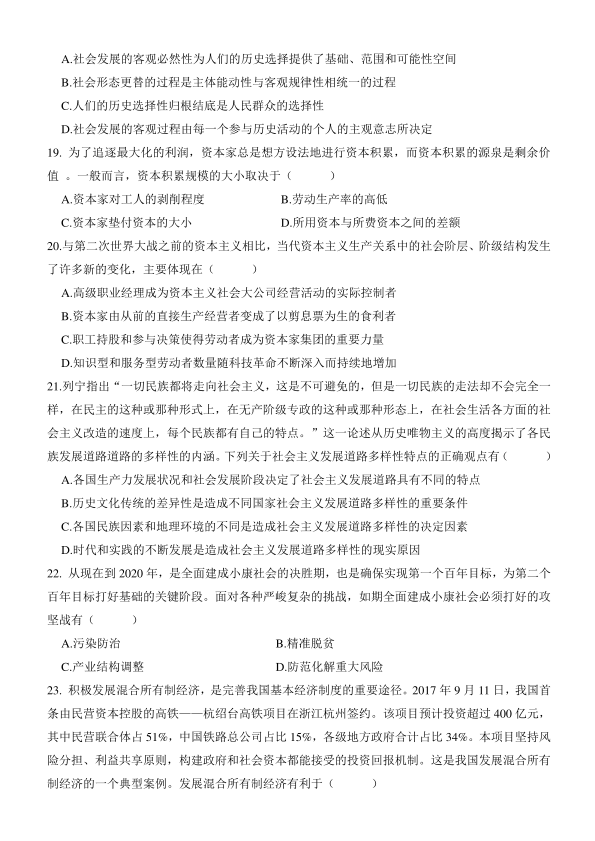
A.社会发展的客观必然性为人们的历史选择提供了基础、范围和可能性空间
B.社会形态更替的过程是主体能动性与客观规律性相统一的过程
C.人们的历史选择性归根结底是人民群众的选择性
D.社会发展的客观过程由每一个参与历史活动的个人的主观意志所决定
19. 为了追逐最大化的利润，资本家总是想方设法地进行资本积累，而资本积累的源泉是剩余价
值 。一般而言，资本积累规模的大小取决于（ ）
A.资本家对工人的剥削程度
B.劳动生产率的高低
C.资本家垫付资本的大小
D.所用资本与所费资本之间的差额
20.与第二次世界大战之前的资本主义相比，当代资本主义生产关系中的社会阶层、阶级结构发生
了许多新的变化，主要体现在（ ）
A.高级职业经理成为资本主义社会大公司经营活动的实际控制者
B.资本家由从前的直接生产经营者变成了以剪息票为生的食利者
C.职工持股和参与决策使得劳动者成为资本家集团的重要力量
D.知识型和服务型劳动者数量随科技革命不断深入而持续地增加
21.列宁指出“一切民族都将走向社会主义，这是不可避免的，但是一切民族的走法却不会完全一
样，在民主的这种或那种形式上，在无产阶级专政的这种或那种形态上，在社会生活各方面的社
会主义改造的速度上，每个民族都有自己的特点。”这一论述从历史唯物主义的高度揭示了各民
族发展道路道路的多样性的内涵。下列关于社会主义发展道路多样性特点的正确观点有（ ）
A.各国生产力发展状况和社会发展阶段决定了社会主义发展道路具有不同的特点
B.历史文化传统的差异性是造成不同国家社会主义发展道路多样性的重要条件
C.各国民族因素和地理环境的不同是造成社会主义发展道路多样性的决定因素
D.时代和实践的不断发展是造成社会主义发展道路多样性的现实原因
22. 从现在到2020 年，是全面建成小康社会的决胜期，也是确保实现第一个百年目标，为第二个
百年目标打好基础的关键阶段。面对各种严峻复杂的挑战，如期全面建成小康社会必须打好的攻
坚战有（ ）
A.污染防治
B.精准脱贫
C.产业结构调整
D.防范化解重大风险
23. 积极发展混合所有制经济，是完善我国基本经济制度的重要途径。2017 年9 月11 日，我国首
条由民营资本控股的高铁——杭绍台高铁项目在浙江杭州签约。该项目预计投资超过400 亿元，
其中民营联合体占51%，中国铁路总公司占比15%，各级地方政府合计占比34%。本项目坚持风
险分担、利益共享原则，构建政府和社会资本都能接受的投资回报机制。这是我国发展混合所有
制经济的一个典型案例。发展混合所有制经济有利于（ ）
查看 / 复制本页文字
A.社会发展的客观必然性为人们的历史选择提供了基础、范围和可能性空间 B.社会形态更替的过程是主体能动性与客观规律性相统一的过程 C.人们的历史选择性归根结底是人民群众的选择性 D.社会发展的客观过程由每一个参与历史活动的个人的主观意志所决定 19. 为了追逐最大化的利润，资本家总是想方设法地进行资本积累，而资本积累的源泉是剩余价 值 。一般而言，资本积累规模的大小取决于（ ） A.资本家对工人的剥削程度 B.劳动生产率的高低 C.资本家垫付资本的大小 D.所用资本与所费资本之间的差额 20.与第二次世界大战之前的资本主义相比，当代资本主义生产关系中的社会阶层、阶级结构发生 了许多新的变化，主要体现在（ ） A.高级职业经理成为资本主义社会大公司经营活动的实际控制者 B.资本家由从前的直接生产经营者变成了以剪息票为生的食利者 C.职工持股和参与决策使得劳动者成为资本家集团的重要力量 D.知识型和服务型劳动者数量随科技革命不断深入而持续地增加 21.列宁指出“一切民族都将走向社会主义，这是不可避免的，但是一切民族的走法却不会完全一 样，在民主的这种或那种形式上，在无产阶级专政的这种或那种形态上，在社会生活各方面的社 会主义改造的速度上，每个民族都有自己的特点。”这一论述从历史唯物主义的高度揭示了各民 族发展道路道路的多样性的内涵。下列关于社会主义发展道路多样性特点的正确观点有（ ） A.各国生产力发展状况和社会发展阶段决定了社会主义发展道路具有不同的特点 B.历史文化传统的差异性是造成不同国家社会主义发展道路多样性的重要条件 C.各国民族因素和地理环境的不同是造成社会主义发展道路多样性的决定因素 D.时代和实践的不断发展是造成社会主义发展道路多样性的现实原因 22. 从现在到2020 年，是全面建成小康社会的决胜期，也是确保实现第一个百年目标，为第二个 百年目标打好基础的关键阶段。面对各种严峻复杂的挑战，如期全面建成小康社会必须打好的攻 坚战有（ ） A.污染防治 B.精准脱贫 C.产业结构调整 D.防范化解重大风险 23. 积极发展混合所有制经济，是完善我国基本经济制度的重要途径。2017 年9 月11 日，我国首 条由民营资本控股的高铁——杭绍台高铁项目在浙江杭州签约。该项目预计投资超过400 亿元， 其中民营联合体占51%，中国铁路总公司占比15%，各级地方政府合计占比34%。本项目坚持风 险分担、利益共享原则，构建政府和社会资本都能接受的投资回报机制。这是我国发展混合所有 制经济的一个典型案例。发展混合所有制经济有利于（ ）
第 5 / 12 页
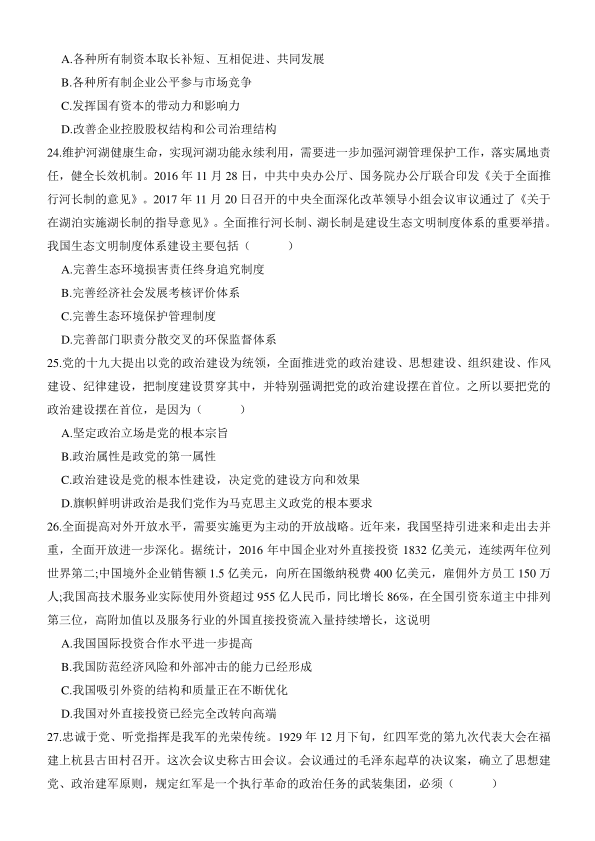
A.各种所有制资本取长补短、互相促进、共同发展
B.各种所有制企业公平参与市场竞争
C.发挥国有资本的带动力和影响力
D.改善企业控股股权结构和公司治理结构
24.维护河湖健康生命，实现河湖功能永续利用，需要进一步加强河湖管理保护工作，落实属地责
任，健全长效机制。2016 年11 月28 日，中共中央办公厅、国务院办公厅联合印发《关于全面推
行河长制的意见》。2017 年11 月20 日召开的中央全面深化改革领导小组会议审议通过了《关于
在湖泊实施湖长制的指导意见》。全面推行河长制、湖长制是建设生态文明制度体系的重要举措。
我国生态文明制度体系建设主要包括（ ）
A.完善生态环境损害责任终身追究制度
B.完善经济社会发展考核评价体系
C.完善生态环境保护管理制度
D.完善部门职责分散交叉的环保监督体系
25.党的十九大提出以党的政治建设为统领，全面推进党的政治建设、思想建设、组织建设、作风
建设、纪律建设，把制度建设贯穿其中，并特别强调把党的政治建设摆在首位。之所以要把党的
政治建设摆在首位，是因为（ ）
A.坚定政治立场是党的根本宗旨
B.政治属性是政党的第一属性
C.政治建设是党的根本性建设，决定党的建设方向和效果
D.旗帜鲜明讲政治是我们党作为马克思主义政党的根本要求
26.全面提高对外开放水平，需要实施更为主动的开放战略。近年来，我国坚持引进来和走出去并
重，全面开放进一步深化。据统计，2016 年中国企业对外直接投资1832 亿美元，连续两年位列
世界第二;中国境外企业销售额1.5 亿美元，向所在国缴纳税费400 亿美元，雇佣外方员工150 万
人;我国高技术服务业实际使用外资超过955 亿人民币，同比增长86%，在全国引资东道主中排列
第三位，高附加值以及服务行业的外国直接投资流入量持续增长，这说明
A.我国国际投资合作水平进一步提高
B.我国防范经济风险和外部冲击的能力已经形成
C.我国吸引外资的结构和质量正在不断优化
D.我国对外直接投资已经完全改转向高端
27.忠诚于党、听党指挥是我军的光荣传统。1929 年12 月下旬，红四军党的第九次代表大会在福
建上杭县古田村召开。这次会议史称古田会议。会议通过的毛泽东起草的决议案，确立了思想建
党、政治建军原则，规定红军是一个执行革命的政治任务的武装集团，必须（ ）
查看 / 复制本页文字
A.各种所有制资本取长补短、互相促进、共同发展 B.各种所有制企业公平参与市场竞争 C.发挥国有资本的带动力和影响力 D.改善企业控股股权结构和公司治理结构 24.维护河湖健康生命，实现河湖功能永续利用，需要进一步加强河湖管理保护工作，落实属地责 任，健全长效机制。2016 年11 月28 日，中共中央办公厅、国务院办公厅联合印发《关于全面推 行河长制的意见》。2017 年11 月20 日召开的中央全面深化改革领导小组会议审议通过了《关于 在湖泊实施湖长制的指导意见》。全面推行河长制、湖长制是建设生态文明制度体系的重要举措。 我国生态文明制度体系建设主要包括（ ） A.完善生态环境损害责任终身追究制度 B.完善经济社会发展考核评价体系 C.完善生态环境保护管理制度 D.完善部门职责分散交叉的环保监督体系 25.党的十九大提出以党的政治建设为统领，全面推进党的政治建设、思想建设、组织建设、作风 建设、纪律建设，把制度建设贯穿其中，并特别强调把党的政治建设摆在首位。之所以要把党的 政治建设摆在首位，是因为（ ） A.坚定政治立场是党的根本宗旨 B.政治属性是政党的第一属性 C.政治建设是党的根本性建设，决定党的建设方向和效果 D.旗帜鲜明讲政治是我们党作为马克思主义政党的根本要求 26.全面提高对外开放水平，需要实施更为主动的开放战略。近年来，我国坚持引进来和走出去并 重，全面开放进一步深化。据统计，2016 年中国企业对外直接投资1832 亿美元，连续两年位列 世界第二;中国境外企业销售额1.5 亿美元，向所在国缴纳税费400 亿美元，雇佣外方员工150 万 人;我国高技术服务业实际使用外资超过955 亿人民币，同比增长86%，在全国引资东道主中排列 第三位，高附加值以及服务行业的外国直接投资流入量持续增长，这说明 A.我国国际投资合作水平进一步提高 B.我国防范经济风险和外部冲击的能力已经形成 C.我国吸引外资的结构和质量正在不断优化 D.我国对外直接投资已经完全改转向高端 27.忠诚于党、听党指挥是我军的光荣传统。1929 年12 月下旬，红四军党的第九次代表大会在福 建上杭县古田村召开。这次会议史称古田会议。会议通过的毛泽东起草的决议案，确立了思想建 党、政治建军原则，规定红军是一个执行革命的政治任务的武装集团，必须（ ）
第 6 / 12 页
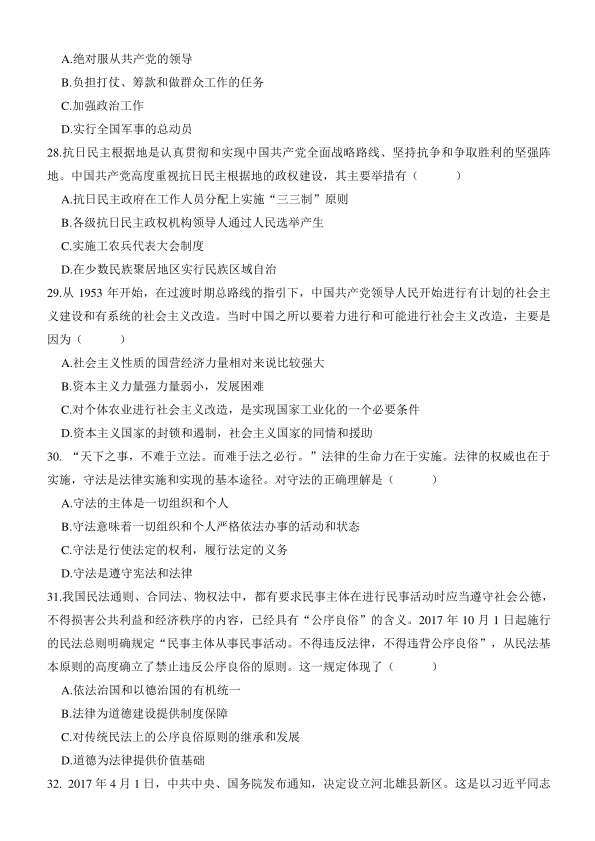
A.绝对服从共产党的领导
B.负担打仗、筹款和做群众工作的任务
C.加强政治工作
D.实行全国军事的总动员
28.抗日民主根据地是认真贯彻和实现中国共产党全面战略路线、坚持抗争和争取胜利的坚强阵
地。中国共产党高度重视抗日民主根据地的政权建设，其主要举措有（ ）
A.抗日民主政府在工作人员分配上实施“三三制”原则
B.各级抗日民主政权机构领导人通过人民选举产生
C.实施工农兵代表大会制度
D.在少数民族聚居地区实行民族区域自治
29.从1953 年开始，在过渡时期总路线的指引下，中国共产党领导人民开始进行有计划的社会主
义建设和有系统的社会主义改造。当时中国之所以要着力进行和可能进行社会主义改造，主要是
因为（ ）
A.社会主义性质的国营经济力量相对来说比较强大
B.资本主义力量强力量弱小，发展困难
C.对个体农业进行社会主义改造，是实现国家工业化的一个必要条件
D.资本主义国家的封锁和遏制，社会主义国家的同情和援助
30. “天下之事，不难于立法。而难于法之必行。”法律的生命力在于实施。法律的权威也在于
实施，守法是法律实施和实现的基本途径。对守法的正确理解是（ ）
A.守法的主体是一切组织和个人
B.守法意味着一切组织和个人严格依法办事的活动和状态
C.守法是行使法定的权利，履行法定的义务
D.守法是遵守宪法和法律
31.我国民法通则、合同法、物权法中，都有要求民事主体在进行民事活动时应当遵守社会公德，
不得损害公共利益和经济秩序的内容，已经具有“公序良俗”的含义。2017 年10 月1 日起施行
的民法总则明确规定“民事主体从事民事活动。不得违反法律，不得违背公序良俗”，从民法基
本原则的高度确立了禁止违反公序良俗的原则。这一规定体现了（ ）
A.依法治国和以德治国的有机统一
B.法律为道德建设提供制度保障
C.对传统民法上的公序良俗原则的继承和发展
D.道德为法律提供价值基础
32. 2017 年4 月1 日，中共中央、国务院发布通知，决定设立河北雄县新区。这是以习近平同志
查看 / 复制本页文字
A.绝对服从共产党的领导 B.负担打仗、筹款和做群众工作的任务 C.加强政治工作 D.实行全国军事的总动员 28.抗日民主根据地是认真贯彻和实现中国共产党全面战略路线、坚持抗争和争取胜利的坚强阵 地。中国共产党高度重视抗日民主根据地的政权建设，其主要举措有（ ） A.抗日民主政府在工作人员分配上实施“三三制”原则 B.各级抗日民主政权机构领导人通过人民选举产生 C.实施工农兵代表大会制度 D.在少数民族聚居地区实行民族区域自治 29.从1953 年开始，在过渡时期总路线的指引下，中国共产党领导人民开始进行有计划的社会主 义建设和有系统的社会主义改造。当时中国之所以要着力进行和可能进行社会主义改造，主要是 因为（ ） A.社会主义性质的国营经济力量相对来说比较强大 B.资本主义力量强力量弱小，发展困难 C.对个体农业进行社会主义改造，是实现国家工业化的一个必要条件 D.资本主义国家的封锁和遏制，社会主义国家的同情和援助 30. “天下之事，不难于立法。而难于法之必行。”法律的生命力在于实施。法律的权威也在于 实施，守法是法律实施和实现的基本途径。对守法的正确理解是（ ） A.守法的主体是一切组织和个人 B.守法意味着一切组织和个人严格依法办事的活动和状态 C.守法是行使法定的权利，履行法定的义务 D.守法是遵守宪法和法律 31.我国民法通则、合同法、物权法中，都有要求民事主体在进行民事活动时应当遵守社会公德， 不得损害公共利益和经济秩序的内容，已经具有“公序良俗”的含义。2017 年10 月1 日起施行 的民法总则明确规定“民事主体从事民事活动。不得违反法律，不得违背公序良俗”，从民法基 本原则的高度确立了禁止违反公序良俗的原则。这一规定体现了（ ） A.依法治国和以德治国的有机统一 B.法律为道德建设提供制度保障 C.对传统民法上的公序良俗原则的继承和发展 D.道德为法律提供价值基础 32. 2017 年4 月1 日，中共中央、国务院发布通知，决定设立河北雄县新区。这是以习近平同志
第 7 / 12 页
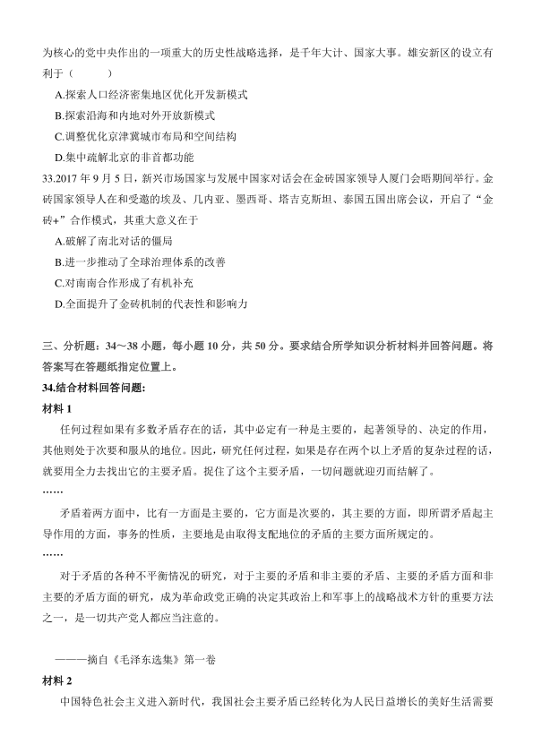
为核心的党中央作出的一项重大的历史性战略选择，是千年大计、国家大事。雄安新区的设立有
利于（ ）
A.探索人口经济密集地区优化开发新模式
B.探索沿海和内地对外开放新模式
C.调整优化京津冀城市布局和空间结构
D.集中疏解北京的非首都功能
33.2017 年9 月5 日，新兴市场国家与发展中国家对话会在金砖国家领导人厦门会晤期间举行。金
砖国家领导人在和受邀的埃及、几内亚、墨西哥、塔吉克斯坦、泰国五国出席会议，开启了“金
砖+”合作模式，其重大意义在于
A.破解了南北对话的僵局
B.进一步推动了全球治理体系的改善
C.对南南合作形成了有机补充
D.全面提升了金砖机制的代表性和影响力
三、分析题：34～38 小题，每小题10 分，共50 分。要求结合所学知识分析材料并回答问题。将
答案写在答题纸指定位置上。
34.结合材料回答问题:
材料1
任何过程如果有多数矛盾存在的话，其中必定有一种是主要的，起著领导的、决定的作用，
其他则处于次要和服从的地位。因此，研究任何过程，如果是存在两个以上矛盾的复杂过程的话，
就要用全力去找出它的主要矛盾。捉住了这个主要矛盾，一切问题就迎刃而结解了。
……
矛盾着两方面中，比有一方面是主要的，它方面是次要的，其主要的方面，即所谓矛盾起主
导作用的方面，事务的性质，主要地是由取得支配地位的矛盾的主要方面所规定的。
……
对于矛盾的各种不平衡情况的研究，对于主要的矛盾和非主要的矛盾、主要的矛盾方面和非
主要的矛盾方面的研究，成为革命政党正确的决定其政治上和军事上的战略战术方针的重要方法
之一，是一切共产党人都应当注意的。
———摘自《毛泽东选集》第一卷
材料2
中国特色社会主义进入新时代，我国社会主要矛盾已经转化为人民日益增长的美好生活需要
查看 / 复制本页文字
为核心的党中央作出的一项重大的历史性战略选择，是千年大计、国家大事。雄安新区的设立有 利于（ ） A.探索人口经济密集地区优化开发新模式 B.探索沿海和内地对外开放新模式 C.调整优化京津冀城市布局和空间结构 D.集中疏解北京的非首都功能 33.2017 年9 月5 日，新兴市场国家与发展中国家对话会在金砖国家领导人厦门会晤期间举行。金 砖国家领导人在和受邀的埃及、几内亚、墨西哥、塔吉克斯坦、泰国五国出席会议，开启了“金 砖+”合作模式，其重大意义在于 A.破解了南北对话的僵局 B.进一步推动了全球治理体系的改善 C.对南南合作形成了有机补充 D.全面提升了金砖机制的代表性和影响力 三、分析题：34～38 小题，每小题10 分，共50 分。要求结合所学知识分析材料并回答问题。将 答案写在答题纸指定位置上。 34.结合材料回答问题: 材料1 任何过程如果有多数矛盾存在的话，其中必定有一种是主要的，起著领导的、决定的作用， 其他则处于次要和服从的地位。因此，研究任何过程，如果是存在两个以上矛盾的复杂过程的话， 就要用全力去找出它的主要矛盾。捉住了这个主要矛盾，一切问题就迎刃而结解了。 …… 矛盾着两方面中，比有一方面是主要的，它方面是次要的，其主要的方面，即所谓矛盾起主 导作用的方面，事务的性质，主要地是由取得支配地位的矛盾的主要方面所规定的。 …… 对于矛盾的各种不平衡情况的研究，对于主要的矛盾和非主要的矛盾、主要的矛盾方面和非 主要的矛盾方面的研究，成为革命政党正确的决定其政治上和军事上的战略战术方针的重要方法 之一，是一切共产党人都应当注意的。 ———摘自《毛泽东选集》第一卷 材料2 中国特色社会主义进入新时代，我国社会主要矛盾已经转化为人民日益增长的美好生活需要
第 8 / 12 页
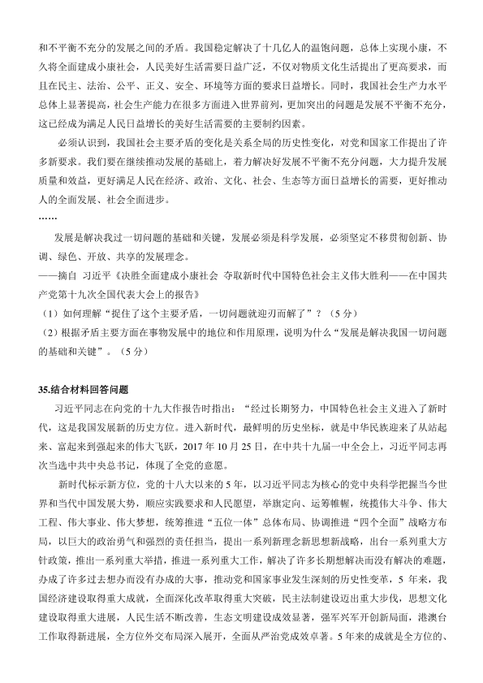
和不平衡不充分的发展之间的矛盾。我国稳定解决了十几亿人的温饱问题，总体上实现小康，不
久将全面建成小康社会，人民美好生活需要日益广泛，不仅对物质文化生活提出了更高要求，而
且在民主、法治、公平、正义、安全、环境等方面的要求日益增长。同时，我国社会生产力水平
总体上显著提高，社会生产能力在很多方面进入世界前列，更加突出的问题是发展不平衡不充分，
这已经成为满足人民日益增长的美好生活需要的主要制约因素。
必须认识到，我国社会主要矛盾的变化是关系全局的历史性变化，对党和国家工作提出了许
多新要求。我们要在继续推动发展的基础上，着力解决好发展不平衡不充分问题，大力提升发展
质量和效益，更好满足人民在经济、政治、文化、社会、生态等方面日益增长的需要，更好推动
人的全面发展、社会全面进步。
……
发展是解决我过一切问题的基础和关键，发展必须是科学发展，必须坚定不移贯彻创新、协
调、绿色、开放、共享的发展理念。
——摘自 习近平《决胜全面建成小康社会 夺取新时代中国特色社会主义伟大胜利——在中国共
产党第十九次全国代表大会上的报告》
（1）如何理解“捉住了这个主要矛盾，一切问题就迎刃而解了”？（5 分）
（2）根据矛盾主要方面在事物发展中的地位和作用原理，说明为什么“发展是解决我国一切问题
的基础和关键”。（5 分）
35.结合材料回答问题
习近平同志在向党的十九大作报告时指出：“经过长期努力，中国特色社会主义进入了新时
代，这是我国发展新的历史方位。进入新时代，最鲜明的历史坐标，就是中华民族迎来了从站起
来、富起来到强起来的伟大飞跃，2017 年10 月25 日，在中共十九届一中全会上，习近平同志再
次当选中共中央总书记，体现了全党的意愿。
新时代标示新方位，党的十八大以来的5 年，以习近平同志为核心的党中央科学把握当今世
界和当代中国发展大势，顺应实践要求和人民愿望，举旗定向、运筹帷幄，统揽伟大斗争、伟大
工程、伟大事业、伟大梦想，统筹推进“五位一体”总体布局、协调推进“四个全面”战略方布
局，以巨大的政治勇气和强烈的责任担当，提出一系列新理念新思想新战略，出台一系列重大方
针政策，推出一系列重大举措，推进一系列重大工作，解决了许多长期想解决而没有解决的难题，
办成了许多过去想办而没有办成的大事，推动党和国家事业发生深刻的历史性变革，5 年来，我
国经济建设取得重大成就，全面深化改革取得重大突破，民主法制建设迈出重大步伐，思想文化
建设取得重大进展，人民生活不断改善，生态文明建设成效显著，强军兴军开创新局面，港澳台
工作取得新进展，全方位外交布局深入展开，全面从严治党成效卓著。5 年来的成就是全方位的、
查看 / 复制本页文字
和不平衡不充分的发展之间的矛盾。我国稳定解决了十几亿人的温饱问题，总体上实现小康，不 久将全面建成小康社会，人民美好生活需要日益广泛，不仅对物质文化生活提出了更高要求，而 且在民主、法治、公平、正义、安全、环境等方面的要求日益增长。同时，我国社会生产力水平 总体上显著提高，社会生产能力在很多方面进入世界前列，更加突出的问题是发展不平衡不充分， 这已经成为满足人民日益增长的美好生活需要的主要制约因素。 必须认识到，我国社会主要矛盾的变化是关系全局的历史性变化，对党和国家工作提出了许 多新要求。我们要在继续推动发展的基础上，着力解决好发展不平衡不充分问题，大力提升发展 质量和效益，更好满足人民在经济、政治、文化、社会、生态等方面日益增长的需要，更好推动 人的全面发展、社会全面进步。 …… 发展是解决我过一切问题的基础和关键，发展必须是科学发展，必须坚定不移贯彻创新、协 调、绿色、开放、共享的发展理念。 ——摘自 习近平《决胜全面建成小康社会 夺取新时代中国特色社会主义伟大胜利——在中国共 产党第十九次全国代表大会上的报告》 （1）如何理解“捉住了这个主要矛盾，一切问题就迎刃而解了”？（5 分） （2）根据矛盾主要方面在事物发展中的地位和作用原理，说明为什么“发展是解决我国一切问题 的基础和关键”。（5 分） 35.结合材料回答问题 习近平同志在向党的十九大作报告时指出：“经过长期努力，中国特色社会主义进入了新时 代，这是我国发展新的历史方位。进入新时代，最鲜明的历史坐标，就是中华民族迎来了从站起 来、富起来到强起来的伟大飞跃，2017 年10 月25 日，在中共十九届一中全会上，习近平同志再 次当选中共中央总书记，体现了全党的意愿。 新时代标示新方位，党的十八大以来的5 年，以习近平同志为核心的党中央科学把握当今世 界和当代中国发展大势，顺应实践要求和人民愿望，举旗定向、运筹帷幄，统揽伟大斗争、伟大 工程、伟大事业、伟大梦想，统筹推进“五位一体”总体布局、协调推进“四个全面”战略方布 局，以巨大的政治勇气和强烈的责任担当，提出一系列新理念新思想新战略，出台一系列重大方 针政策，推出一系列重大举措，推进一系列重大工作，解决了许多长期想解决而没有解决的难题， 办成了许多过去想办而没有办成的大事，推动党和国家事业发生深刻的历史性变革，5 年来，我 国经济建设取得重大成就，全面深化改革取得重大突破，民主法制建设迈出重大步伐，思想文化 建设取得重大进展，人民生活不断改善，生态文明建设成效显著，强军兴军开创新局面，港澳台 工作取得新进展，全方位外交布局深入展开，全面从严治党成效卓著。5 年来的成就是全方位的、
第 9 / 12 页
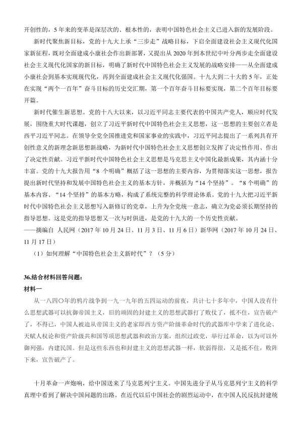
开创性的，5 年来的变革是深层次的、根本性的，表明中国特色社会主义已进入新的发展阶段。
新时代聚焦新目标，党的十九大上承“三步走”战略目标，下启全面建设社会主义现代化国
家新征程，既对全面建成小康社会作出新部署，又提出从2020 年到本世纪中叶分两步走全面建设
社会主义现代化国家的新目标，明确了新时代中国特色社会主义发展的战略安排——从全面建成
小康社会到基本实现现代化，再到全面建成社会主义现代化强国。十九大到二十大的5 年，正处
在实现“两个一百年”奋斗目标的历史交汇期，第一个百年奋斗目标要实现，第二个百年目标要
开篇。
新时代催生新思想。党的十八大以来，以习近平同志主要代表的中国共产党人，顺应时代发
展，围绕重大时代课题，创立了习近平新时代中国特色社会主义思想，这一思想的主要创立者是
西平习近平同志。在领导全党全国推进党和国家事业的实践中，习近平同志提出了一系列具有开
创性意义的新理念新思想新战略，为新时代中国特色社会主义思想创立发挥了决定性作用、作出
了决定性贡献。习近平新时代中国特色社会主义思想是马克思主义中国化最新成果，其内涵十分
丰富。党的十九大报告用“8 个明确”概括了这一思想的主要内容，为贯彻落实这一思想，报告
提出新时代坚持和发展中国特色社会主义的基本方针，并概括为“14 个坚持”。“8 个明确”的
基本内容、“14 个坚持”的基本方略，构成了系统完整的科学理论体系。党的十九大把习近平新
时代中国特色社会主义思想写入新修订的党章，上升为全党统一意志，确立为党必须长期坚持的
指导思想。这是党的指导思想又一次与时俱进，是党的十九大的一个历史性贡献。
——摘编自 人民网（2017 年10 月24 日、11 月3 日、11 月6 日）新华网（2017 年10 月24 日、
11 月17 日）
（1）如何理解“中国特色社会主义新时代”？（5 分）
36.结合材料回答问题：
材料一
从一八四〇年的鸦片战争到一九一九年的五四运动的前夜，共计七十多年中，中国人没有什
么思想武器可以抗御帝国主义，旧的顽固的封建主义的思想武器打了败仗了，抵不住，宣告破产
了，不得已，中国人被迫从帝国主义的老家即西方资产阶级革命时代的武器库中学来了进化论、
天赋人权论和资产阶级共和国等项思想武器和政治方案，组织过政党，举行过革命，以为可以外
御列强，内建民国。但是这些东西也和封建主义的思想武器一样，软弱得很，又是抵不住，败阵
下来，宣告破产了。
十月革命一声炮响，给中国送来了马克思列宁主义。中国先进分子从马克思列宁主义的科学
真理中看到了解决中国问题的出路。在近代以后中国社会的剧烈运动中，在中国人民反抗封建统
查看 / 复制本页文字
开创性的，5 年来的变革是深层次的、根本性的，表明中国特色社会主义已进入新的发展阶段。 新时代聚焦新目标，党的十九大上承“三步走”战略目标，下启全面建设社会主义现代化国 家新征程，既对全面建成小康社会作出新部署，又提出从2020 年到本世纪中叶分两步走全面建设 社会主义现代化国家的新目标，明确了新时代中国特色社会主义发展的战略安排——从全面建成 小康社会到基本实现现代化，再到全面建成社会主义现代化强国。十九大到二十大的5 年，正处 在实现“两个一百年”奋斗目标的历史交汇期，第一个百年奋斗目标要实现，第二个百年目标要 开篇。 新时代催生新思想。党的十八大以来，以习近平同志主要代表的中国共产党人，顺应时代发 展，围绕重大时代课题，创立了习近平新时代中国特色社会主义思想，这一思想的主要创立者是 西平习近平同志。在领导全党全国推进党和国家事业的实践中，习近平同志提出了一系列具有开 创性意义的新理念新思想新战略，为新时代中国特色社会主义思想创立发挥了决定性作用、作出 了决定性贡献。习近平新时代中国特色社会主义思想是马克思主义中国化最新成果，其内涵十分 丰富。党的十九大报告用“8 个明确”概括了这一思想的主要内容，为贯彻落实这一思想，报告 提出新时代坚持和发展中国特色社会主义的基本方针，并概括为“14 个坚持”。“8 个明确”的 基本内容、“14 个坚持”的基本方略，构成了系统完整的科学理论体系。党的十九大把习近平新 时代中国特色社会主义思想写入新修订的党章，上升为全党统一意志，确立为党必须长期坚持的 指导思想。这是党的指导思想又一次与时俱进，是党的十九大的一个历史性贡献。 ——摘编自 人民网（2017 年10 月24 日、11 月3 日、11 月6 日）新华网（2017 年10 月24 日、 11 月17 日） （1）如何理解“中国特色社会主义新时代”？（5 分） 36.结合材料回答问题： 材料一 从一八四〇年的鸦片战争到一九一九年的五四运动的前夜，共计七十多年中，中国人没有什 么思想武器可以抗御帝国主义，旧的顽固的封建主义的思想武器打了败仗了，抵不住，宣告破产 了，不得已，中国人被迫从帝国主义的老家即西方资产阶级革命时代的武器库中学来了进化论、 天赋人权论和资产阶级共和国等项思想武器和政治方案，组织过政党，举行过革命，以为可以外 御列强，内建民国。但是这些东西也和封建主义的思想武器一样，软弱得很，又是抵不住，败阵 下来，宣告破产了。 十月革命一声炮响，给中国送来了马克思列宁主义。中国先进分子从马克思列宁主义的科学 真理中看到了解决中国问题的出路。在近代以后中国社会的剧烈运动中，在中国人民反抗封建统
第 10 / 12 页
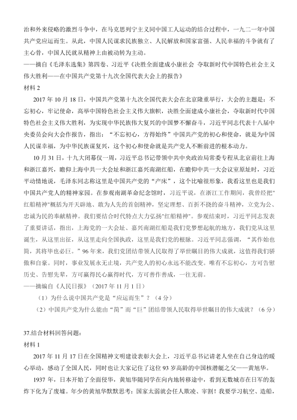
治和外来侵略的激烈斗争中，在马克思列宁主义同中国工人运动的结合过程中，一九二一年中国
共产党应运而生。从此，中国人民谋求民族独立、人民解放和国家富强、人民幸福的斗争就有了
主心骨，中国人民就从精神上由被动转为主动。
——摘自《毛泽东选集》第四卷、习近平《决胜全面建成小康社会 夺取新时代中国特色社会主义
伟大胜利——在中国共产党第十九次全国代表大会上的报告》
材料2
2017 年10 月18 日，中国共产党第十九次全国代表大会在北京隆重举行，大会的主题是：不
忘初心，牢记使命，高举中国特色社会主义伟大旗帜，决胜全面建成小康社会，夺取新时代中国
特色社会主义伟大胜利，为实现中华民族伟大复兴的中国梦不懈奋斗，习近平同志代表十八届中
央委员会向大会作报告，指出：“不忘初心，方得始终”中国共产党的初心和使命，就是为中国
人民谋幸福，为中华民族谋复兴，这个初心和使命就是共产党人不断前进的根本动力。
10 月31 日，十九大闭幕仅一周，习近平总书记带领中共中央政治局常委专程从北京前往上海
和浙江嘉兴，瞻仰上海中共一大会址和浙江嘉兴南湖红船，在瞻仰中共一大会议室原址时，习近
平动情地说，毛泽东同志称这里是中国共产党的“产床”，这个比喻很形象，我看这里也是我们
中国共产党人的精神家园。在参观南湖革命纪念馆时，习近平说，在浙江工作期间，我曾经把"
红船精神"概括为开天辟地、敢为人先的首创精神，坚定理想、百折不挠的奋斗精神，立党为公、
忠诚为民的奉献精神。我们要结合时代特点大力弘扬"红船精神"。参观结束时，习近平同志发表
了重要讲话，指出，上海党的一大会址、嘉兴南湖红船是我们党梦想起航的地方，我们党从这里
诞生，从这里出征，从这里走向全国执政，这里是我们党的根脉。习近平同志强调，“其作始也
简，其将毕也必巨。”96 年来，我们党团结带领人民取得了举世瞩目的伟大成就，这值得我们骄
傲和自豪。同时，事业发展永无止境，共产党人的初心永远不能改变。唯有不忘初心，方可告慰
历史、告慰先辈，方可赢得民心赢得时代，方可善作善成，一往无前。
——摘编自《人民日报》（2017 年11 月1 日）
（1）为什么说中国共产党是“应运而生”？（4 分）
（2）中国共产党为什么能由“简”而“巨”团结带领人民取得举世瞩目的伟大成就？（6 分）
37.结合材料回答问题：
材料1
2017 年11 月17 日在全国精神文明建设表彰大会上，习近平总书记请老人坐在自己身边的暖
心举动，感动了全国人民，同时也让大家记住了这位93 岁高龄的中国核潜艇之父——黄旭华。
1937 年，日本开始了全面侵华，黄旭华随同学在向内地转移途中，看到无数城市在日军的轰
炸下化为了废墟。年少的黄旭华默默思考：国家太弱就会任人欺凌、宰割！我要学习航空、造船，
查看 / 复制本页文字
治和外来侵略的激烈斗争中，在马克思列宁主义同中国工人运动的结合过程中，一九二一年中国 共产党应运而生。从此，中国人民谋求民族独立、人民解放和国家富强、人民幸福的斗争就有了 主心骨，中国人民就从精神上由被动转为主动。 ——摘自《毛泽东选集》第四卷、习近平《决胜全面建成小康社会 夺取新时代中国特色社会主义 伟大胜利——在中国共产党第十九次全国代表大会上的报告》 材料2 2017 年10 月18 日，中国共产党第十九次全国代表大会在北京隆重举行，大会的主题是：不 忘初心，牢记使命，高举中国特色社会主义伟大旗帜，决胜全面建成小康社会，夺取新时代中国 特色社会主义伟大胜利，为实现中华民族伟大复兴的中国梦不懈奋斗，习近平同志代表十八届中 央委员会向大会作报告，指出：“不忘初心，方得始终”中国共产党的初心和使命，就是为中国 人民谋幸福，为中华民族谋复兴，这个初心和使命就是共产党人不断前进的根本动力。 10 月31 日，十九大闭幕仅一周，习近平总书记带领中共中央政治局常委专程从北京前往上海 和浙江嘉兴，瞻仰上海中共一大会址和浙江嘉兴南湖红船，在瞻仰中共一大会议室原址时，习近 平动情地说，毛泽东同志称这里是中国共产党的“产床”，这个比喻很形象，我看这里也是我们 中国共产党人的精神家园。在参观南湖革命纪念馆时，习近平说，在浙江工作期间，我曾经把" 红船精神"概括为开天辟地、敢为人先的首创精神，坚定理想、百折不挠的奋斗精神，立党为公、 忠诚为民的奉献精神。我们要结合时代特点大力弘扬"红船精神"。参观结束时，习近平同志发表 了重要讲话，指出，上海党的一大会址、嘉兴南湖红船是我们党梦想起航的地方，我们党从这里 诞生，从这里出征，从这里走向全国执政，这里是我们党的根脉。习近平同志强调，“其作始也 简，其将毕也必巨。”96 年来，我们党团结带领人民取得了举世瞩目的伟大成就，这值得我们骄 傲和自豪。同时，事业发展永无止境，共产党人的初心永远不能改变。唯有不忘初心，方可告慰 历史、告慰先辈，方可赢得民心赢得时代，方可善作善成，一往无前。 ——摘编自《人民日报》（2017 年11 月1 日） （1）为什么说中国共产党是“应运而生”？（4 分） （2）中国共产党为什么能由“简”而“巨”团结带领人民取得举世瞩目的伟大成就？（6 分） 37.结合材料回答问题： 材料1 2017 年11 月17 日在全国精神文明建设表彰大会上，习近平总书记请老人坐在自己身边的暖 心举动，感动了全国人民，同时也让大家记住了这位93 岁高龄的中国核潜艇之父——黄旭华。 1937 年，日本开始了全面侵华，黄旭华随同学在向内地转移途中，看到无数城市在日军的轰 炸下化为了废墟。年少的黄旭华默默思考：国家太弱就会任人欺凌、宰割！我要学习航空、造船，
第 11 / 12 页
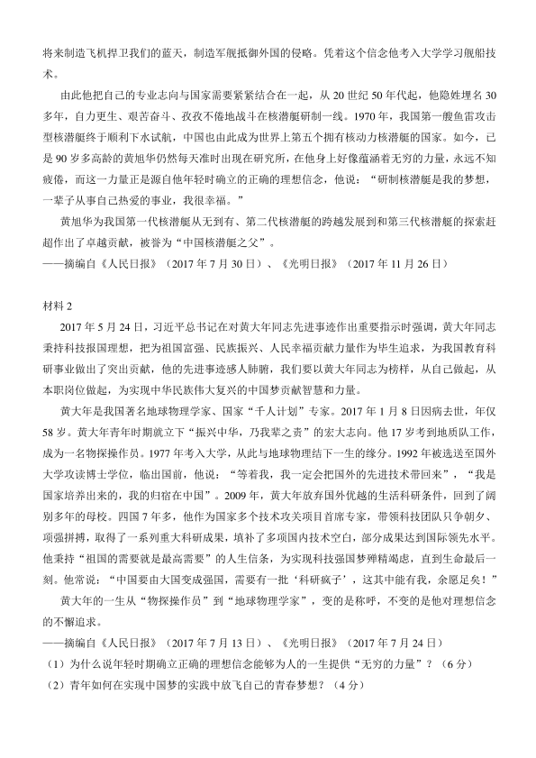
将来制造飞机捍卫我们的蓝天，制造军舰抵御外国的侵略。凭着这个信念他考入大学学习舰船技
术。
由此他把自己的专业志向与国家需要紧紧结合在一起，从20 世纪50 年代起，他隐姓埋名30
多年，自力更生、艰苦奋斗、孜孜不倦地战斗在核潜艇研制一线。1970 年，我国第一艘鱼雷攻击
型核潜艇终于顺利下水试航，中国也由此成为世界上第五个拥有核动力核潜艇的国家。如今，已
是90 岁多高龄的黄旭华仍然每天准时出现在研究所，在他身上好像蕴涵着无穷的力量，永远不知
疲倦，而这一力量正是源自他年轻时确立的正确的理想信念，他说：“研制核潜艇是我的梦想，
一辈子从事自己热爱的事业，我很幸福。”
黄旭华为我国第一代核潜艇从无到有、第二代核潜艇的跨越发展到和第三代核潜艇的探索赶
超作出了卓越贡献，被誉为“中国核潜艇之父”。
——摘编自《人民日报》（2017 年7 月30 日）、《光明日报》（2017 年11 月26 日）
材料2
2017 年5 月24 日，习近平总书记在对黄大年同志先进事迹作出重要指示时强调，黄大年同志
秉持科技报国理想，把为祖国富强、民族振兴、人民幸福贡献力量作为毕生追求，为我国教育科
研事业做出了突出贡献，他的先进事迹感人肺腑，我们要以黄大年同志为榜样，从自己做起，从
本职岗位做起，为实现中华民族伟大复兴的中国梦贡献智慧和力量。
黄大年是我国著名地球物理学家、国家“千人计划”专家。2017 年1 月8 日因病去世，年仅
58 岁。黄大年青年时期就立下“振兴中华，乃我辈之责”的宏大志向。他17 岁考到地质队工作，
成为一名物探操作员。1977 年考入大学，从此与地球物理结下一生的缘分。1992 年被选送至国外
大学攻读博士学位，临出国前，他说：“等着我，我一定会把国外的先进技术带回来”，“我是
国家培养出来的，我的归宿在中国”。2009 年，黄大年放弃国外优越的生活科研条件，回到了阔
别多年的母校。四国7 年多，他作为国家多个技术攻关项目首席专家，带领科技团队只争朝夕、
项强拼搏，取得了一系列重大科研成果，填补了多项国内技术空白，部分成果达到国际领先水平。
他秉持“祖国的需要就是最高需要”的人生信条，为实现科技强国梦殚精竭虑，直到生命最后一
刻。他常说：“中国要由大国变成强国，需要有一批‘科研疯子’，这其中能有我，余愿足矣！”
黄大年的一生从“物探操作员”到“地球物理学家”，变的是称呼，不变的是他对理想信念
的不懈追求。
——摘编自《人民日报》（2017 年7 月13 日）、《光明日报》（2017 年7 月24 日）
（1）为什么说年轻时期确立正确的理想信念能够为人的一生提供“无穷的力量”？（6 分）
（2）青年如何在实现中国梦的实践中放飞自己的青春梦想？（4 分）
查看 / 复制本页文字
将来制造飞机捍卫我们的蓝天，制造军舰抵御外国的侵略。凭着这个信念他考入大学学习舰船技 术。 由此他把自己的专业志向与国家需要紧紧结合在一起，从20 世纪50 年代起，他隐姓埋名30 多年，自力更生、艰苦奋斗、孜孜不倦地战斗在核潜艇研制一线。1970 年，我国第一艘鱼雷攻击 型核潜艇终于顺利下水试航，中国也由此成为世界上第五个拥有核动力核潜艇的国家。如今，已 是90 岁多高龄的黄旭华仍然每天准时出现在研究所，在他身上好像蕴涵着无穷的力量，永远不知 疲倦，而这一力量正是源自他年轻时确立的正确的理想信念，他说：“研制核潜艇是我的梦想， 一辈子从事自己热爱的事业，我很幸福。” 黄旭华为我国第一代核潜艇从无到有、第二代核潜艇的跨越发展到和第三代核潜艇的探索赶 超作出了卓越贡献，被誉为“中国核潜艇之父”。 ——摘编自《人民日报》（2017 年7 月30 日）、《光明日报》（2017 年11 月26 日） 材料2 2017 年5 月24 日，习近平总书记在对黄大年同志先进事迹作出重要指示时强调，黄大年同志 秉持科技报国理想，把为祖国富强、民族振兴、人民幸福贡献力量作为毕生追求，为我国教育科 研事业做出了突出贡献，他的先进事迹感人肺腑，我们要以黄大年同志为榜样，从自己做起，从 本职岗位做起，为实现中华民族伟大复兴的中国梦贡献智慧和力量。 黄大年是我国著名地球物理学家、国家“千人计划”专家。2017 年1 月8 日因病去世，年仅 58 岁。黄大年青年时期就立下“振兴中华，乃我辈之责”的宏大志向。他17 岁考到地质队工作， 成为一名物探操作员。1977 年考入大学，从此与地球物理结下一生的缘分。1992 年被选送至国外 大学攻读博士学位，临出国前，他说：“等着我，我一定会把国外的先进技术带回来”，“我是 国家培养出来的，我的归宿在中国”。2009 年，黄大年放弃国外优越的生活科研条件，回到了阔 别多年的母校。四国7 年多，他作为国家多个技术攻关项目首席专家，带领科技团队只争朝夕、 项强拼搏，取得了一系列重大科研成果，填补了多项国内技术空白，部分成果达到国际领先水平。 他秉持“祖国的需要就是最高需要”的人生信条，为实现科技强国梦殚精竭虑，直到生命最后一 刻。他常说：“中国要由大国变成强国，需要有一批‘科研疯子’，这其中能有我，余愿足矣！” 黄大年的一生从“物探操作员”到“地球物理学家”，变的是称呼，不变的是他对理想信念 的不懈追求。 ——摘编自《人民日报》（2017 年7 月13 日）、《光明日报》（2017 年7 月24 日） （1）为什么说年轻时期确立正确的理想信念能够为人的一生提供“无穷的力量”？（6 分） （2）青年如何在实现中国梦的实践中放飞自己的青春梦想？（4 分）
第 12 / 12 页
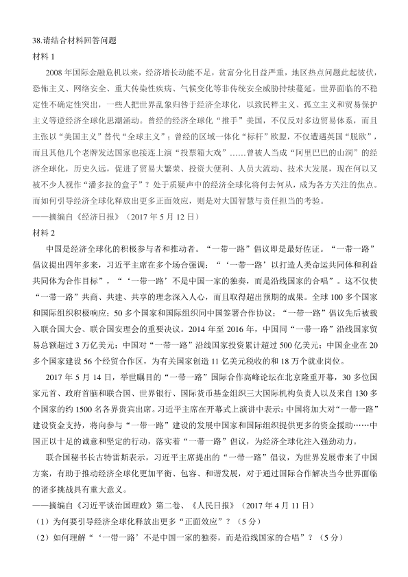
38.请结合材料回答问题
材料1
2008 年国际金融危机以来，经济增长动能不足，贫富分化日益严重，地区热点问题此起彼伏，
恐怖主义、网络安全、重大传染性疾病、气候变化等非传统安全威胁持续蔓延。世界面临的不稳
定性不确定性突出，一些人把世界乱象归咎于经济全球化，以致民粹主义、孤立主义和贸易保护
主义等逆经济全球化思潮涌动。曾经的经济全球化“推手”美国，不仅反对多边贸易体系，而且
主张以“美国主义”替代“全球主义”；曾经的区域一体化“标杆”欧盟，不仅遭遇英国“脱欧”，
而且其他几个老牌发达国家也接连上演“投票箱大戏”……曾被人当成“阿里巴巴的山洞”的经
济全球化，历史久远，促进了贸易大繁荣、投资大便利、人员大流动、技术大发展，现在何以又
被不少人视作“潘多拉的盒子”？处于质疑声中的经济全球化将何去何从，成为各方关注的焦点。
而如何引导经济全球化释放出更多正面效应，则是对大国智慧与责任担当的考验。
——摘编自《经济日报》（2017 年5 月12 日）
材料2
中国是经济全球化的积极参与者和推动者。“一带一路”倡议即是最好佐证。“一带一路”
倡议提出四年多来，习近平主席在多个场合强调：“‘一带一路’以打造人类命运共同体和利益
共同体为合作目标”，“‘一带一路’不是中国一家的独奏，而是沿线国家的合唱”。这不仅使
“一带一路”共商、共建、共享的理念深入人心，而且取得超出预期的成果。全球100 多个国家
和国际组织积极响应；50 多个国家和国际组织同中国签署合作协议；“一带一路”倡议先后被载
入联合国大会、联合国安理会的重要决议。2014 年至2016 年，中国同“一带一路”沿线国家贸
易总额超过3 万亿美元；中国对“一带一路”沿线国家投资累计超过500 亿美元；中国企业在20
多个国家建设56 个经贸合作区，为有关国家创造11 亿美元税收的和18 万个就业岗位。
2017 年5 月14 日，举世瞩目的“一带一路”国际合作高峰论坛在北京隆重开幕，30 多位国
家元首、政府首脑和联合国、世界银行、国际货币基金组织三大国际机构负责人以及来自130 多
个国家的约1500 名各界贵宾出席。习近平主席在开幕式上演讲中表示：中国将加大对“一带一路”
建设资金支持，将向参与“一带一路”建设的发展中国家和国际组织提供更多的资金援助……中
国正以十足的诚意和坚定的行动，落实着“一带一路”倡议，为经济全球化注入强劲动力。
联合国秘书长古特雷斯表示，习近平主席提出的“一带一路”倡议，为世界发展带来了中国
方案，有助于推动经济全球化更加平衡、包容、和谐发展，对于通过国际合作解决当今世界面临
的诸多挑战具有重大意义。
——摘编自《习近平谈治国理政》第二卷、《人民日报》（2017 年4 月11 日）
（1）为何要引导经济全球化释放出更多“正面效应”？（5 分）
（2）如何理解“‘一带一路’不是中国一家的独奏，而是沿线国家的合唱”？（5 分）
查看 / 复制本页文字
38.请结合材料回答问题 材料1 2008 年国际金融危机以来，经济增长动能不足，贫富分化日益严重，地区热点问题此起彼伏， 恐怖主义、网络安全、重大传染性疾病、气候变化等非传统安全威胁持续蔓延。世界面临的不稳 定性不确定性突出，一些人把世界乱象归咎于经济全球化，以致民粹主义、孤立主义和贸易保护 主义等逆经济全球化思潮涌动。曾经的经济全球化“推手”美国，不仅反对多边贸易体系，而且 主张以“美国主义”替代“全球主义”；曾经的区域一体化“标杆”欧盟，不仅遭遇英国“脱欧”， 而且其他几个老牌发达国家也接连上演“投票箱大戏”……曾被人当成“阿里巴巴的山洞”的经 济全球化，历史久远，促进了贸易大繁荣、投资大便利、人员大流动、技术大发展，现在何以又 被不少人视作“潘多拉的盒子”？处于质疑声中的经济全球化将何去何从，成为各方关注的焦点。 而如何引导经济全球化释放出更多正面效应，则是对大国智慧与责任担当的考验。 ——摘编自《经济日报》（2017 年5 月12 日） 材料2 中国是经济全球化的积极参与者和推动者。“一带一路”倡议即是最好佐证。“一带一路” 倡议提出四年多来，习近平主席在多个场合强调：“‘一带一路’以打造人类命运共同体和利益 共同体为合作目标”，“‘一带一路’不是中国一家的独奏，而是沿线国家的合唱”。这不仅使 “一带一路”共商、共建、共享的理念深入人心，而且取得超出预期的成果。全球100 多个国家 和国际组织积极响应；50 多个国家和国际组织同中国签署合作协议；“一带一路”倡议先后被载 入联合国大会、联合国安理会的重要决议。2014 年至2016 年，中国同“一带一路”沿线国家贸 易总额超过3 万亿美元；中国对“一带一路”沿线国家投资累计超过500 亿美元；中国企业在20 多个国家建设56 个经贸合作区，为有关国家创造11 亿美元税收的和18 万个就业岗位。 2017 年5 月14 日，举世瞩目的“一带一路”国际合作高峰论坛在北京隆重开幕，30 多位国 家元首、政府首脑和联合国、世界银行、国际货币基金组织三大国际机构负责人以及来自130 多 个国家的约1500 名各界贵宾出席。习近平主席在开幕式上演讲中表示：中国将加大对“一带一路” 建设资金支持，将向参与“一带一路”建设的发展中国家和国际组织提供更多的资金援助……中 国正以十足的诚意和坚定的行动，落实着“一带一路”倡议，为经济全球化注入强劲动力。 联合国秘书长古特雷斯表示，习近平主席提出的“一带一路”倡议，为世界发展带来了中国 方案，有助于推动经济全球化更加平衡、包容、和谐发展，对于通过国际合作解决当今世界面临 的诸多挑战具有重大意义。 ——摘编自《习近平谈治国理政》第二卷、《人民日报》（2017 年4 月11 日） （1）为何要引导经济全球化释放出更多“正面效应”？（5 分） （2）如何理解“‘一带一路’不是中国一家的独奏，而是沿线国家的合唱”？（5 分）